Building models for biological data
WiFi:
Network: Southernsunconference
Network Password: ahri2026
Previous password (only if ahri2026 doesn’t work): S0uthernsun1
Workshop materials are at:
Distinguish between the “large” and “small” worlds of modeling.
Compare biostatistical models and explain when they apply.
Use R to estimate models and know how to explain the output.
Diagnose and address model failures.
The plots below show IL-1a concentration from our workshop luminex dataset.
Notice the variation across people and a possible treatment effect at the post-treatment visit.
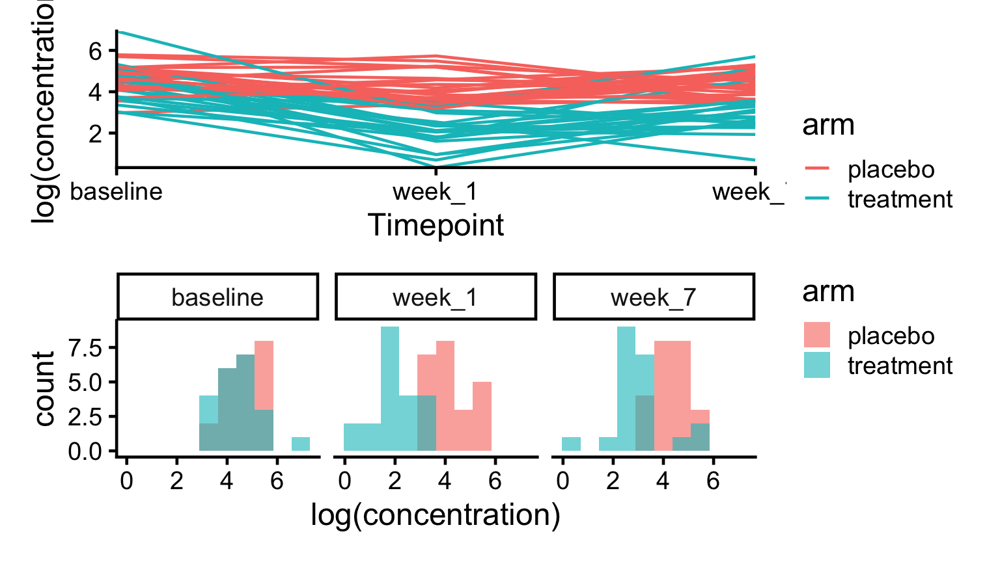
Imagine running the study again, keeping the recruitment and experimental protocols as similar as possible. Make two lists:
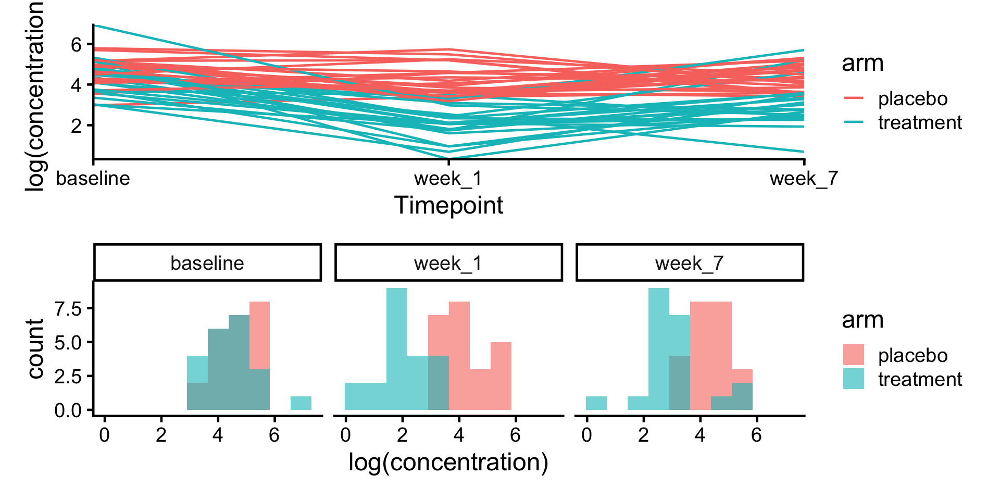
A statistical model is a simplified description of how the data were generated, the “data story.”
Model parameters let us answer scientific questions, like how a treatment affects outcomes.
We observe just one realization of the data generating process – things could have turned out differently if we ran the study again.
Large world
Small world
There will always be a gap between the two worlds. That gap is itself a source of uncertainty not captured by the model.
A dataset is like a photograph of a biological system, but it develops slowly and is more error prone.
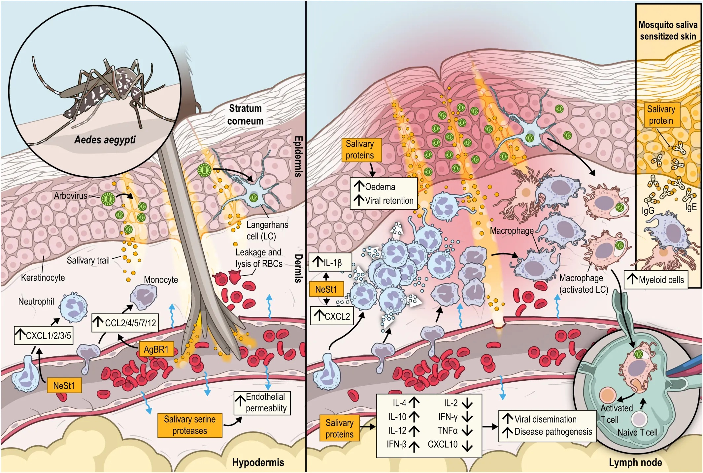
A dataset is like a photograph of a biological system, but the snapshot takes longer to generate and is more error prone.
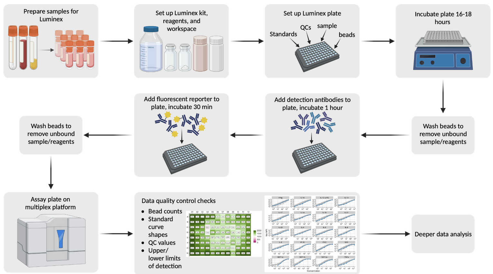
A dataset is like a photograph of a biological system, but the snapshot takes longer to generate and is more error prone.
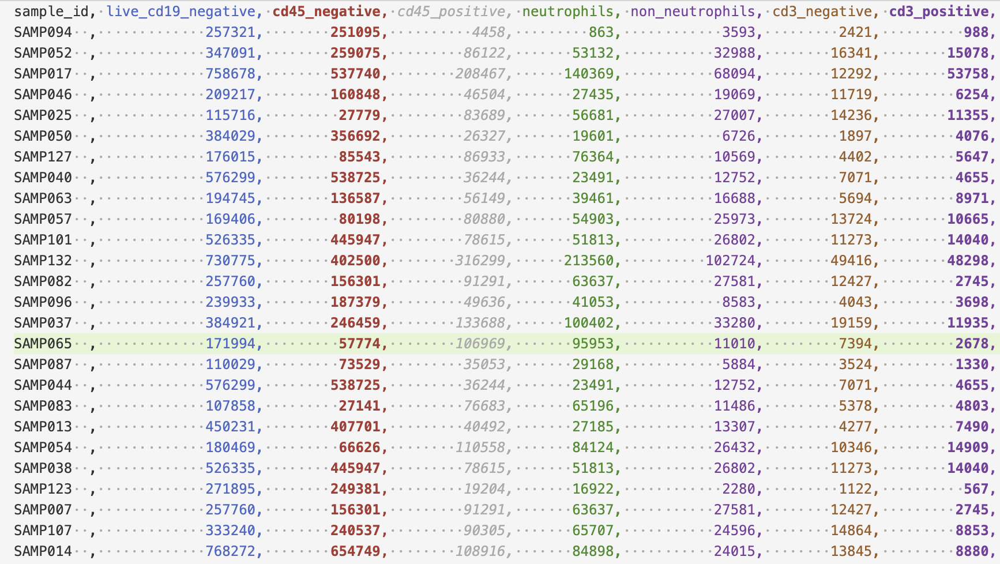
The small-world model summarizes what would stay true if the experiment were repeated.
It encodes a data generating process that lets us simulate new data with the experiment’s key features, without memorizing every sample.
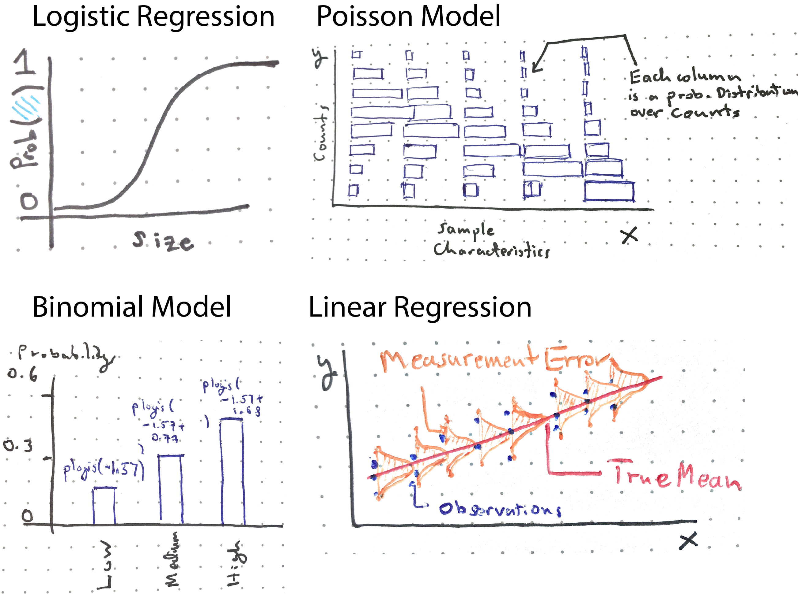
Biological Question. What real-world questions do you want to answer?
Plot the Data. What does the outcome look like? Do you notice relationships with other variables?
Working Assumptions. Make a small-world story for how the data were generated. This is the initial statistical model.
Model Checks. Use simulation and diagnostics to check whether the model captures patterns we see in the real data.
Revised Models. Revise until the model provides a good match. Use this to answer the original question.
Each type of statistical model is designed for a different kind of data or biological question.
Like having a well-stocked pantry is needed to cook many recipes, knowing the basic statistical ingredients will allow you to adapt to whatever data or questions you encounter.
Today’s tour:
These models apply when outcomes fall into two groups.
The Bernoulli is for individual outcomes, the Binomial applies to their totals
The raw data come from two classes, and we want their relative probabilities.
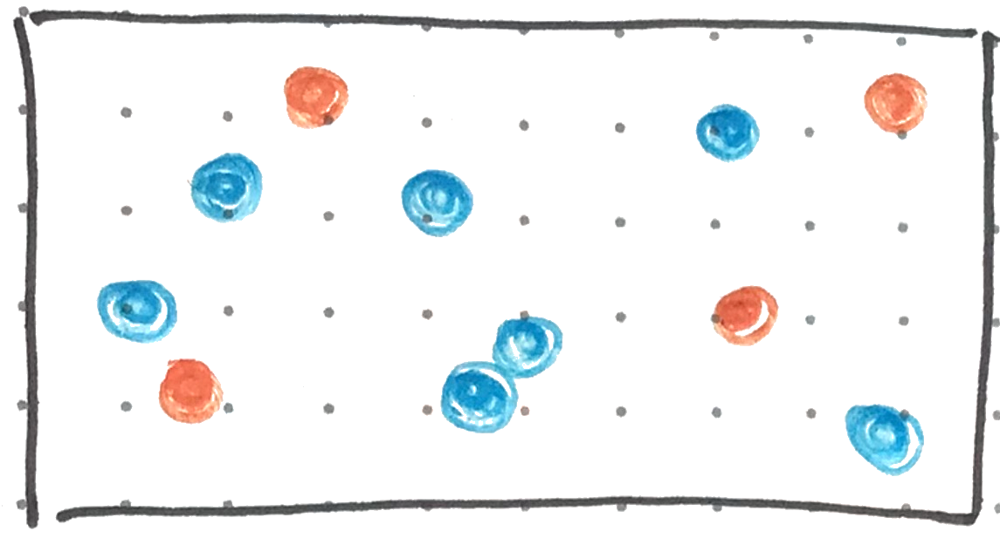
The raw data come from two classes, and we want their relative probabilities.
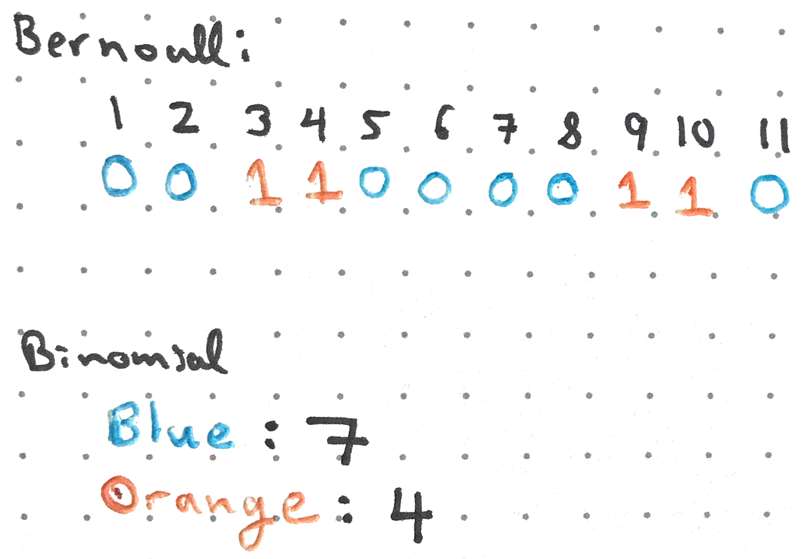
The outcome probabilities can depend on sample-level covariates.
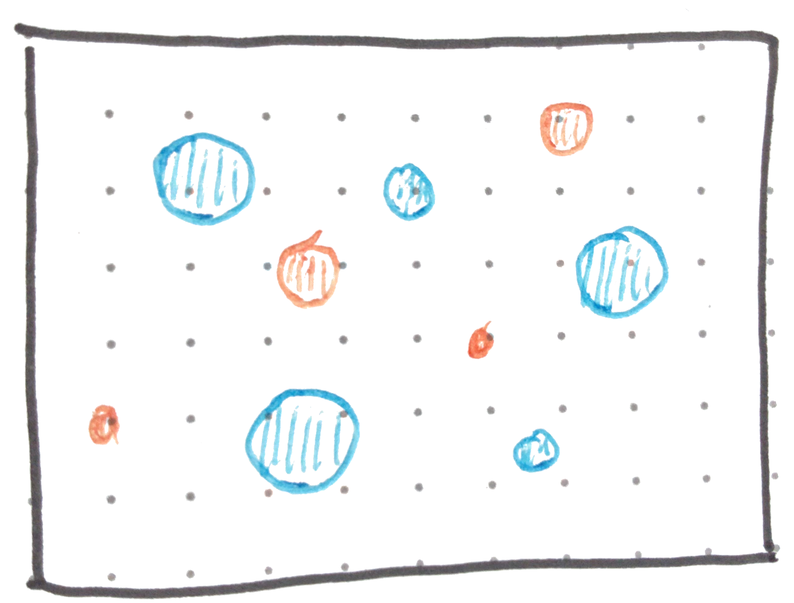
The outcome probabilities can depend on sample-level covariates.
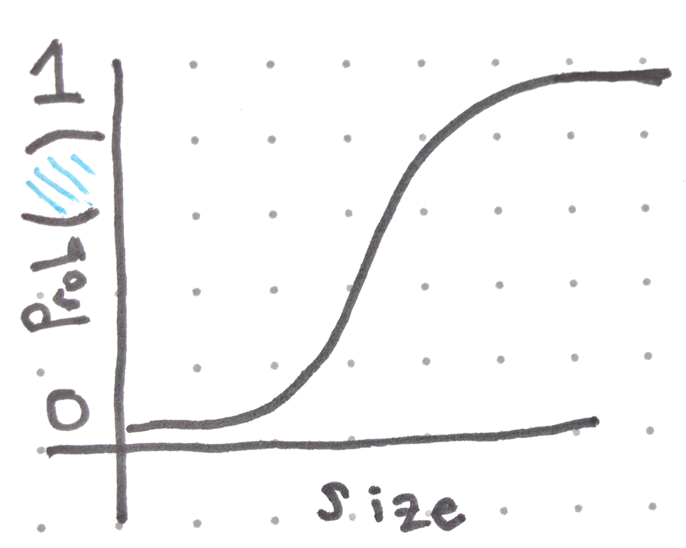
# A tibble: 100 × 3
sample_id social_contact infected
<chr> <dbl> <dbl>
1 sample_1 0.748 1
2 sample_2 0.379 0
3 sample_3 0.483 0
4 sample_4 0.813 0
5 sample_5 0.670 0
6 sample_6 0.400 0
7 sample_7 0.0899 0
8 sample_8 0.611 1
9 sample_9 0.935 0
10 sample_10 0.849 1
# ℹ 90 more rowsData Story: More social contact → higher probability of infection.
Response \(y\): Who does (1) or doesn’t (0) get infected during an outbreak?
Covariates \(x\): Some people have larger social networks than others.
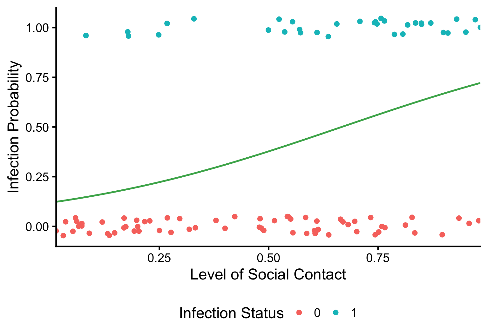
glmThe glm function has three arguments:
formula: written y ~ x, this relates outcome y to covariates xfamily: the type of model (depends on the data type of the outcome)data: a data.frame containing the columns named in formula
Call:
glm(formula = infected ~ social_contact, family = binomial(),
data = infections)
Coefficients:
Estimate Std. Error z value Pr(>|z|)
(Intercept) -2.3702 0.5739 -4.130 3.63e-05 ***
social_contact 3.0933 0.8908 3.473 0.000515 ***
---
Signif. codes: 0 '***' 0.001 '**' 0.01 '*' 0.05 '.' 0.1 ' ' 1
(Dispersion parameter for binomial family taken to be 1)
Null deviance: 128.21 on 99 degrees of freedom
Residual deviance: 113.69 on 98 degrees of freedom
AIC: 117.69
Number of Fisher Scoring iterations: 4
We wrote family = binomial(), but since infected is 0/1, the code knows to run a Bernoulli model.
The estimates are on the log-odds scale, which isn’t directly interpretable.
plogis() converts them to the probability scale:
This model is often called logistic regression, after the inverse logistic function (plogis).
At social contact level x, the infection probability ≈ plogis(-2.37 + 3.09x)
x = 0 \(\implies\) plogis(-2.37) ≈ 0.085x = 0.5 \(\implies\) plogis(-2.37 + 3.09 * 0.5) ≈ 0.24x = 1 \(\implies\) plogis(-2.37 + 3.09 * 1) ≈ 0.50
Call:
glm(formula = infected ~ social_contact, family = binomial(),
data = infections)
Coefficients:
Estimate Std. Error z value Pr(>|z|)
(Intercept) -2.3702 0.5739 -4.130 3.63e-05 ***
social_contact 3.0933 0.8908 3.473 0.000515 ***
---
Signif. codes: 0 '***' 0.001 '**' 0.01 '*' 0.05 '.' 0.1 ' ' 1
(Dispersion parameter for binomial family taken to be 1)
Null deviance: 128.21 on 99 degrees of freedom
Residual deviance: 113.69 on 98 degrees of freedom
AIC: 117.69
Number of Fisher Scoring iterations: 4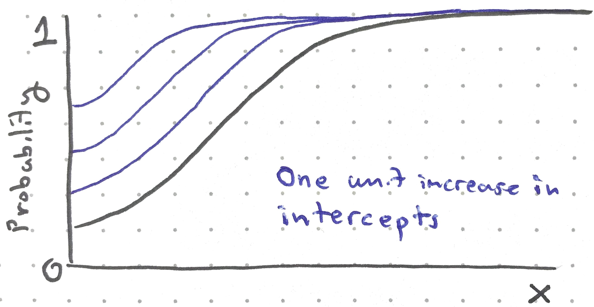
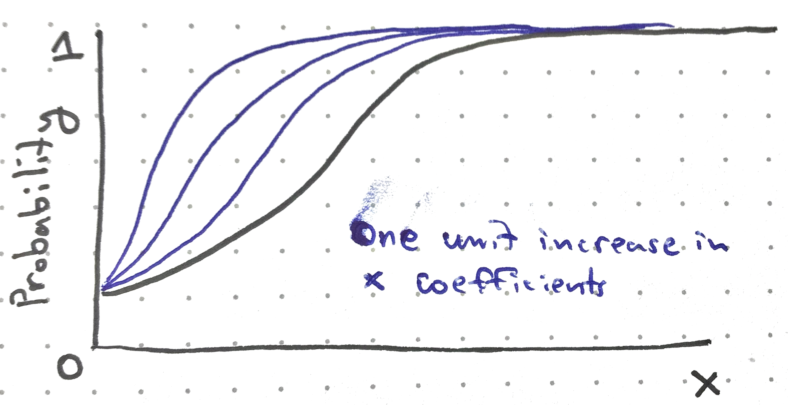
x = 0 \(\implies\) plogis(-2.37) ≈ 0.085x = 0.5 \(\implies\) plogis(-2.37 + 3.09 * 0.5) ≈ 0.30x = 1 \(\implies\) plogis(-2.37 + 3.09 * 1) ≈ 0.67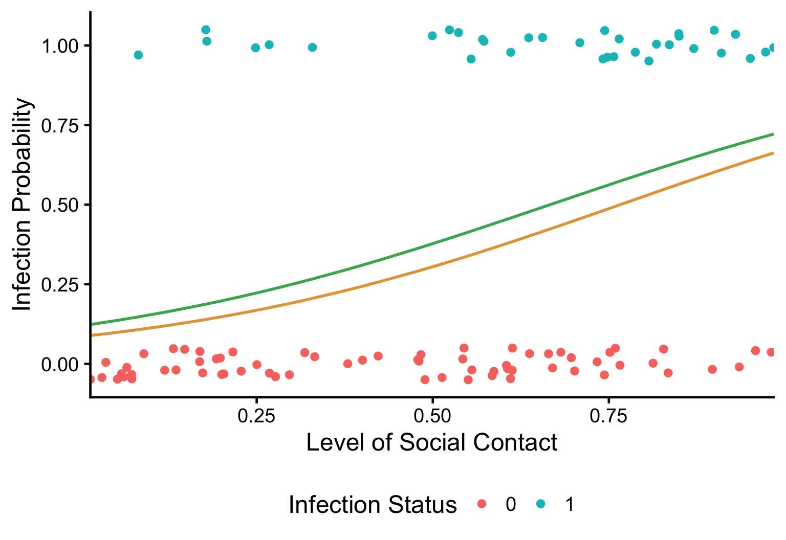
These models apply to count data.
The Poisson arises as the “number of occurrences of an event that happens rarely but has many opportunities to happen” (1). The number of raindrops landing on a small window during a heavy storm would be Poisson distributed.
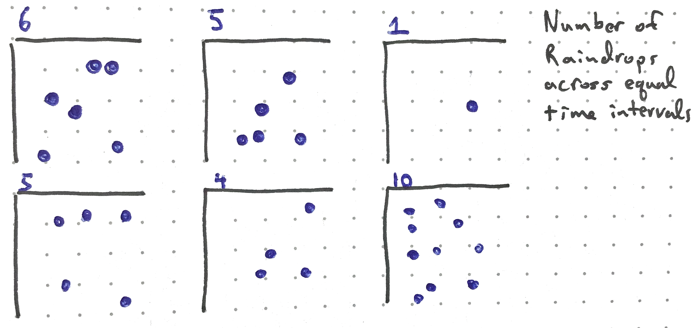
These models apply to count data.
The Poisson arises as the “number of occurrences of an event that happens rarely but has many opportunities to happen” (1). The number of raindrops landing on a small window during a heavy storm would be Poisson distributed.
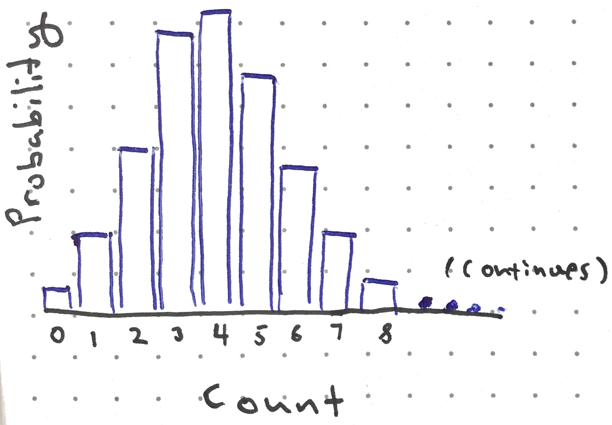
Counts can depend on sample characteristics. The rain may have been falling harder earlier in the night.
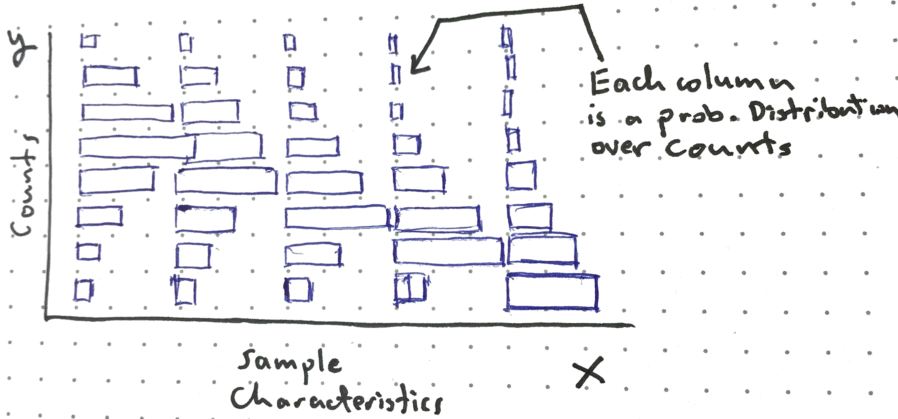
Many biological counts have this flavor:
Let’s fit a model for the infection count example.
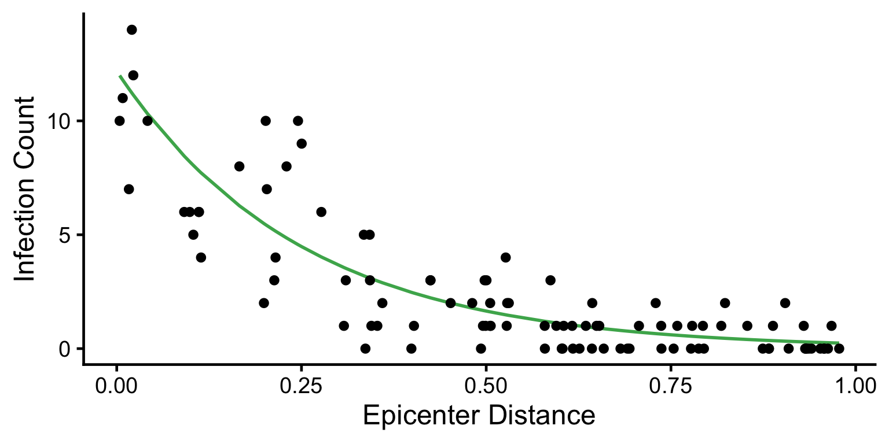
Counts can depend on sample characteristics, like more infections in counties closer to the outbreak epicenter.
# A tibble: 100 × 3
sample_id epicenter_distance infected
<chr> <dbl> <dbl>
1 sample_1 0.952 0
2 sample_2 0.213 3
3 sample_3 0.498 3
4 sample_4 0.307 1
5 sample_5 0.888 1
6 sample_6 0.605 1
7 sample_7 0.930 1
8 sample_8 0.737 0
9 sample_9 0.399 0
10 sample_10 0.104 5
# ℹ 90 more rows
Call:
glm(formula = infected ~ epicenter_distance, family = poisson(),
data = outbreak)
Coefficients:
Estimate Std. Error z value Pr(>|z|)
(Intercept) 2.41503 0.09458 25.54 <2e-16 ***
epicenter_distance -3.89306 0.27251 -14.29 <2e-16 ***
---
Signif. codes: 0 '***' 0.001 '**' 0.01 '*' 0.05 '.' 0.1 ' ' 1
(Dispersion parameter for poisson family taken to be 1)
Null deviance: 364.28 on 99 degrees of freedom
Residual deviance: 108.18 on 98 degrees of freedom
AIC: 304.64
Number of Fisher Scoring iterations: 5The output is on the log scale, so exponentiate before interpreting.
At distance x, the average count is ≈ exp(2.4 - 3.9x)
x = 0 \(\implies\) exp(2.4) ≈ 11.0x = 0.5 \(\implies\) exp(2.4 − 3.9 * 0.5) ≈ 1.6
Call:
glm(formula = infected ~ epicenter_distance, family = poisson(),
data = outbreak)
Coefficients:
Estimate Std. Error z value Pr(>|z|)
(Intercept) 2.41503 0.09458 25.54 <2e-16 ***
epicenter_distance -3.89306 0.27251 -14.29 <2e-16 ***
---
Signif. codes: 0 '***' 0.001 '**' 0.01 '*' 0.05 '.' 0.1 ' ' 1
(Dispersion parameter for poisson family taken to be 1)
Null deviance: 364.28 on 99 degrees of freedom
Residual deviance: 108.18 on 98 degrees of freedom
AIC: 304.64
Number of Fisher Scoring iterations: 5At distance x, the average count is ≈ exp(2.4 - 3.9x)
x = 0 \(\implies\) exp(2.4) ≈ 11.0x = 0.5 \(\implies\) exp(2.4 − 3.9 * 0.5) ≈ 1.6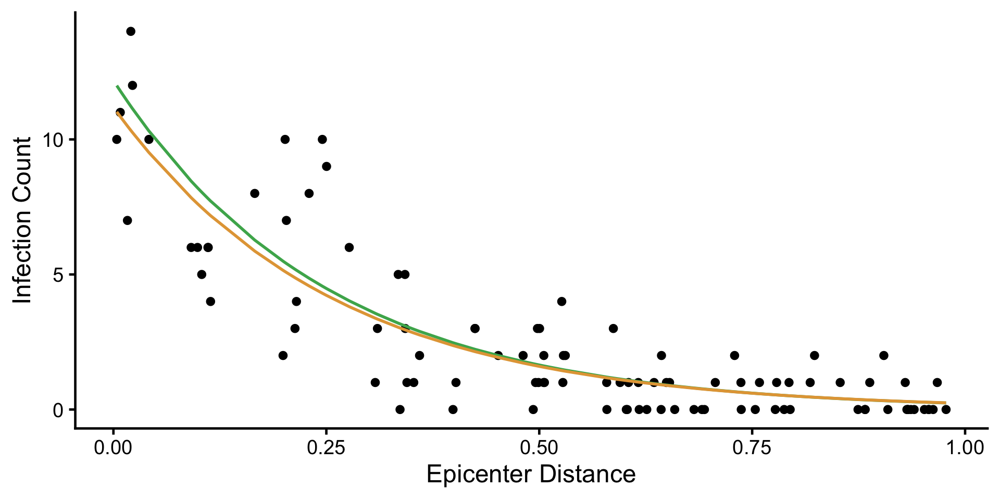
Linear regression applies when the response is continuous. For example:
The model assumes random Gaussian error around a mean value that depends on the covariates.
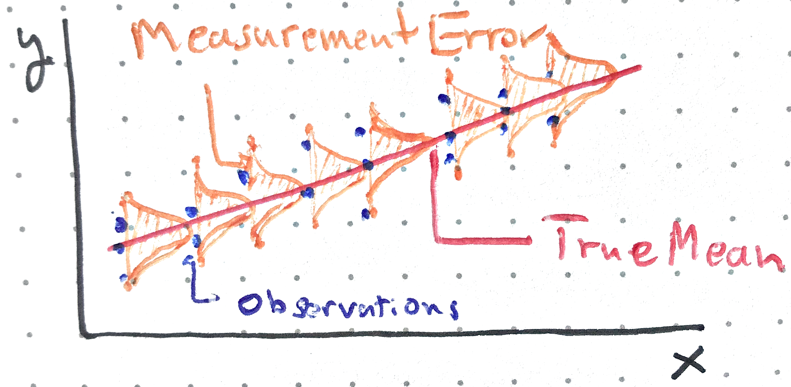
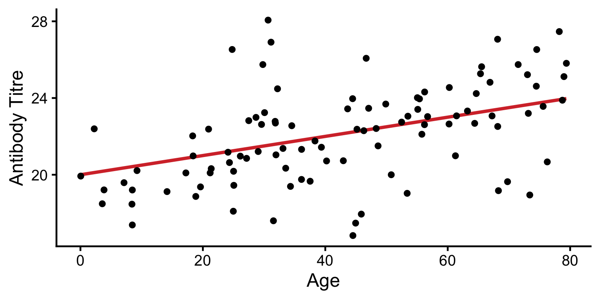
lmSame inputs as glm, but no family.
Call:
lm(formula = antibody ~ age, data = antibody)
Residuals:
Min 1Q Median 3Q Max
-5.345 -1.076 -0.076 1.325 6.698
Coefficients:
Estimate Std. Error t value Pr(>|t|)
(Intercept) 19.57687 0.49545 39.514 < 2e-16 ***
age 0.05834 0.01041 5.606 1.91e-07 ***
---
Signif. codes: 0 '***' 0.001 '**' 0.01 '*' 0.05 '.' 0.1 ' ' 1
Residual standard error: 2.205 on 98 degrees of freedom
Multiple R-squared: 0.2428, Adjusted R-squared: 0.2351
F-statistic: 31.42 on 1 and 98 DF, p-value: 1.911e-07The estimates are on the same scale as the response, so we can interpret the results directly.
Call:
lm(formula = antibody ~ age, data = antibody)
Residuals:
Min 1Q Median 3Q Max
-5.345 -1.076 -0.076 1.325 6.698
Coefficients:
Estimate Std. Error t value Pr(>|t|)
(Intercept) 19.57687 0.49545 39.514 < 2e-16 ***
age 0.05834 0.01041 5.606 1.91e-07 ***
---
Signif. codes: 0 '***' 0.001 '**' 0.01 '*' 0.05 '.' 0.1 ' ' 1
Residual standard error: 2.205 on 98 degrees of freedom
Multiple R-squared: 0.2428, Adjusted R-squared: 0.2351
F-statistic: 31.42 on 1 and 98 DF, p-value: 1.911e-07Predicted titre at age x is 19.6 + 0.058x
E.g. at age 10 the prediction is ≈ 19.6 + 0.58 = 20.18
The Central Limit Theorem: the average of many small, independent effects tends toward a Gaussian distribution.
We implicitly assume many small, independent factors other than age that perturb the observed antibody measurement.
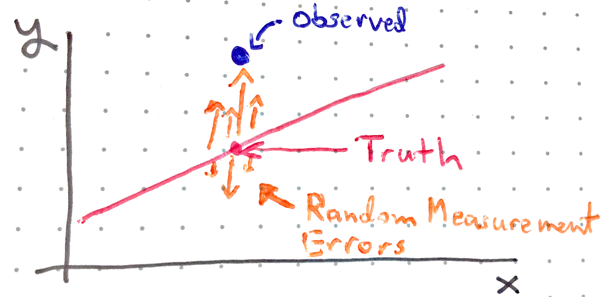
Recommend a model for each of the following questions. What plot would you use to validate your choice? What would be the response and covariate variables?
Formulas can have multiple covariates: y ~ x1 + x2
Each estimate is the effect of a variable with all others held fixed.
Call:
lm(formula = antibody ~ age + blood_pressure, data = antibody)
Residuals:
Min 1Q Median 3Q Max
-5.014 -1.044 -0.175 1.288 6.525
Coefficients:
Estimate Std. Error t value Pr(>|t|)
(Intercept) 21.10179 1.10078 19.170 < 2e-16 ***
age 0.05839 0.01033 5.650 1.61e-07 ***
blood_pressure -0.01553 0.01003 -1.549 0.125
---
Signif. codes: 0 '***' 0.001 '**' 0.01 '*' 0.05 '.' 0.1 ' ' 1
Residual standard error: 2.19 on 97 degrees of freedom
Multiple R-squared: 0.2611, Adjusted R-squared: 0.2458
F-statistic: 17.14 on 2 and 97 DF, p-value: 4.239e-07Fixing blood pressure, average antibody level increases by 0.058 units per year of age.
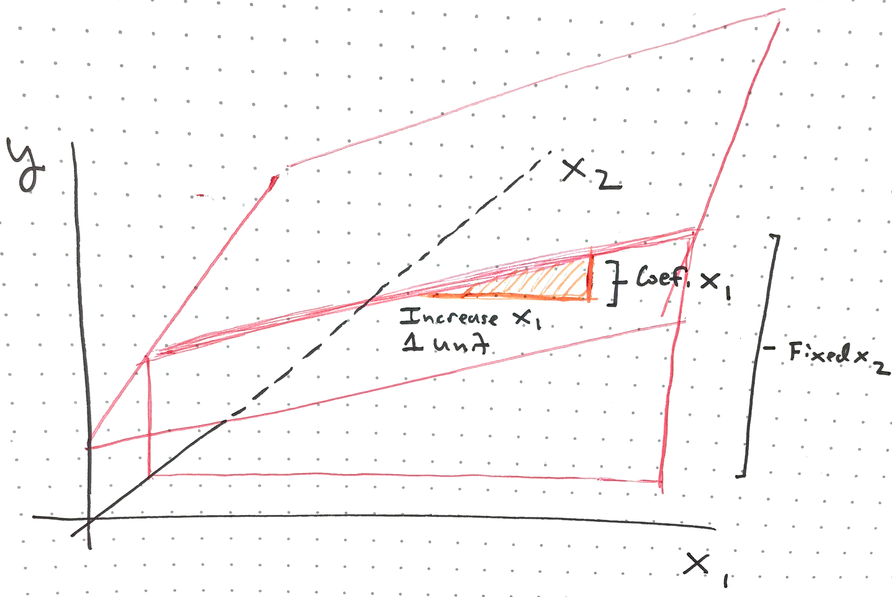
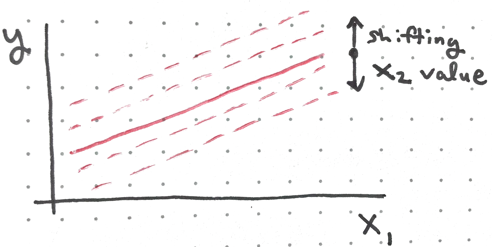
All models can be used with covariates that are categorical. They are not limited to drawing smooth curves or straight lines.
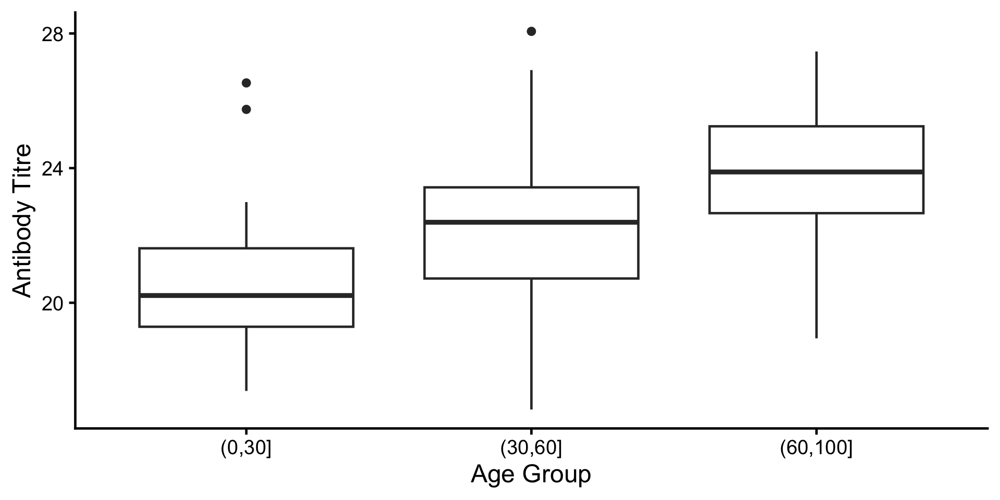
This is a linear regression model fitted to the previous slide’s data, where antibody levels are grouped.
Call:
lm(formula = antibody ~ age_group, data = antibody_grouped)
Residuals:
Min 1Q Median 3Q Max
-5.209 -1.311 0.119 1.429 6.025
Coefficients:
Estimate Std. Error t value Pr(>|t|)
(Intercept) 20.6901 0.4078 50.737 < 2e-16 ***
age_group(30,60] 1.3476 0.5376 2.507 0.0139 *
age_group(60,100] 2.9923 0.5977 5.006 2.48e-06 ***
---
Signif. codes: 0 '***' 0.001 '**' 0.01 '*' 0.05 '.' 0.1 ' ' 1
Residual standard error: 2.27 on 97 degrees of freedom
Multiple R-squared: 0.2054, Adjusted R-squared: 0.189
F-statistic: 12.54 on 2 and 97 DF, p-value: 1.436e-05Baseline effects often vary across contexts.
In the Bernoulli example, the way infection probability increases with social contact may vary across counties due to unmeasured factors, like population density.
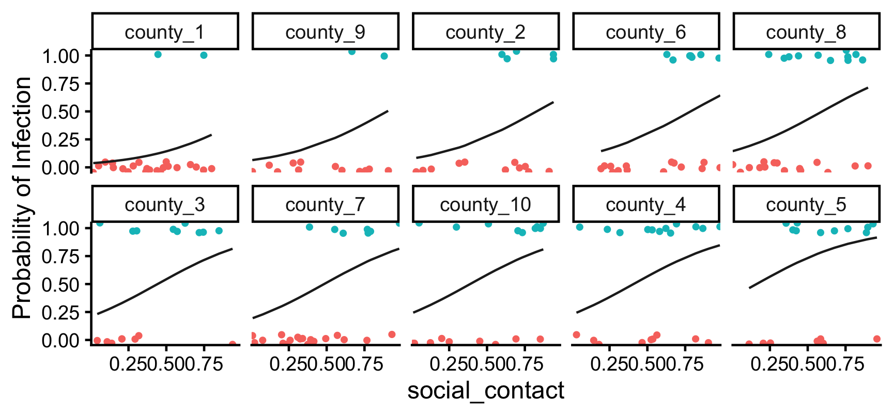
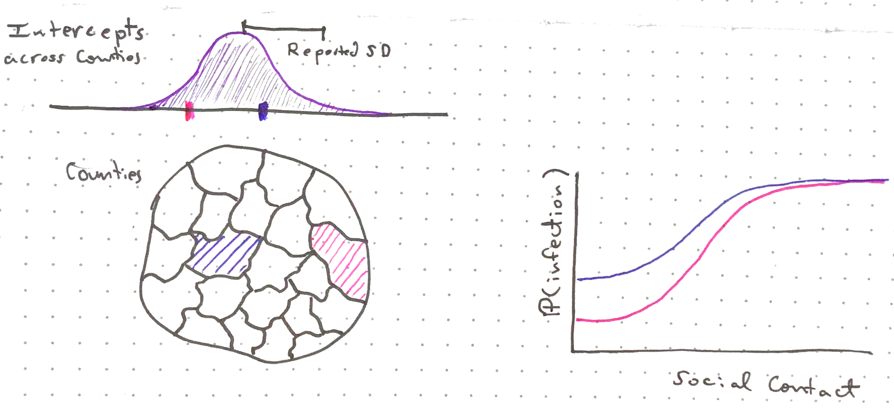
glmerReplace glm with glmer and add (1 | county) to the formula.
Generalized linear mixed model fit by maximum likelihood (Laplace
Approximation) [glmerMod]
Family: binomial ( logit )
Formula: infected ~ social_contact + (1 | county)
Data: mixed_effect_data
AIC BIC logLik -2*log(L) df.resid
230.8 240.7 -112.4 224.8 197
Scaled residuals:
Min 1Q Median 3Q Max
-2.2664 -0.6116 -0.3655 0.7618 2.5619
Random effects:
Groups Name Variance Std.Dev.
county (Intercept) 0.5015 0.7082
Number of obs: 200, groups: county, 10
Fixed effects:
Estimate Std. Error z value Pr(>|z|)
(Intercept) -2.4680 0.4783 -5.160 2.47e-07 ***
social_contact 3.5811 0.6886 5.201 1.99e-07 ***
---
Signif. codes: 0 '***' 0.001 '**' 0.01 '*' 0.05 '.' 0.1 ' ' 1
Correlation of Fixed Effects:
(Intr)
socil_cntct -0.808The SD says the intercept varies by roughly 0.71 across counties, at any level of social contact. Therefore, even at social contact = 0, the infection probabilities below would both be typical:
Sometimes the effect of a variable on the response depends on the value of other variables. This is called an interaction.
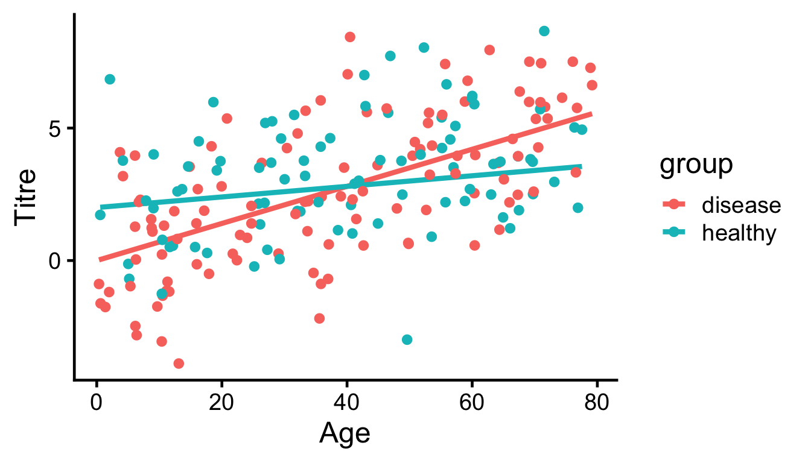
Use y ~ x1 + x1 : x2 — meaning the x1 effect depends on the level of x2.
Call:
lm(formula = antibody ~ age + age:group, data = interaction_data)
Residuals:
Min 1Q Median 3Q Max
-6.4765 -1.6597 -0.0768 1.5193 6.1728
Coefficients:
Estimate Std. Error t value Pr(>|t|)
(Intercept) 0.543777 0.300945 1.807 0.0723 .
age 0.061801 0.007332 8.428 7.31e-15 ***
age:grouphealthy -0.002380 0.006885 -0.346 0.7300
---
Signif. codes: 0 '***' 0.001 '**' 0.01 '*' 0.05 '.' 0.1 ' ' 1
Residual standard error: 2.158 on 197 degrees of freedom
Multiple R-squared: 0.293, Adjusted R-squared: 0.2858
F-statistic: 40.82 on 2 and 197 DF, p-value: 1.47e-15Although we introduced these with Bernoulli and linear regression examples, they apply to any of the models we’ve seen.
They are the key tools we can use when revising a model’s working assumptions to improve its fit.
Think through the first three parts of the modeling checklist for a dataset that you are interested in from your own work or study.
Biological Question. What real-world questions do you want to answer?
Plot the Data. Did you ever plot the data? If so, what patterns did you see? If not, what plots could you make?
Working Assumptions. Make a small-world story about your data. What model type, response \(y\), and covariates \(x\) could you use?
Biological Question
Does treatment with the anti-inflammatory drug change cytokine concentrations post-treatment (week 1), and if so does the effect persist into the long run (week 7)?
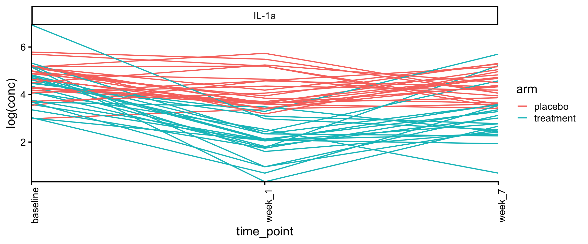
There seems to be a strong treatment effect at one week that weakens by week 7. We’ll focus on IL-1a, the cytokine with the fewest measurements below the detection limit.
Call:
lm(formula = log(conc) ~ arm, data = cytokines)
Residuals:
Min 1Q Median 3Q Max
-2.8298 -0.7570 -0.0689 0.6711 3.7742
Coefficients:
Estimate Std. Error t value Pr(>|t|)
(Intercept) 4.4001 0.1276 34.486 < 2e-16 ***
armtreatment -1.2410 0.1847 -6.719 5.18e-10 ***
---
Signif. codes: 0 '***' 0.001 '**' 0.01 '*' 0.05 '.' 0.1 ' ' 1
Residual standard error: 1.06 on 130 degrees of freedom
Multiple R-squared: 0.2578, Adjusted R-squared: 0.2521
F-statistic: 45.15 on 1 and 130 DF, p-value: 5.176e-10The treatment effect is significant, but we should interpret a model only after checking its fidelity.
The simulate function lets you simulate new response values. By default each simulated output matches the corresponding training sample.
[1] 2.9782474 6.0056472 4.6327290 3.7430813 3.5097814 5.1458344 4.5135263
[8] 5.1387133 4.4975827 4.5481366 6.4344731 2.8556228 4.9953841 2.0500680
[15] 4.0052839 5.4021195 3.6101001 4.5343215 4.8250682 4.5887460 3.7720848
[22] 4.5184610 2.6803282 4.6261843 3.4404870 3.3533365 2.4449162 3.5283287
[29] 3.4626330 2.2391925 2.9518091 1.9920836 2.1450500 4.6969986 6.6768738
[36] 3.3847478 5.7555652 3.9405248 4.3984729 5.1203345 3.5206530 4.6858492
[43] 4.7225900 4.0776217 3.8196220 4.3564437 4.2561353 5.0029103 3.9887328
[50] 3.7775043 3.0674642 3.0946751 2.9118487 4.0622687 5.7886975 5.0469376
[57] 4.6218549 4.4094212 2.5883835 3.6234321 4.7350077 3.9779685 3.5437505
[64] 4.1855129 3.2432183 5.0063909 3.9797440 4.6439749 4.5911723 4.0344294
[71] 5.5723322 4.9410032 1.5954450 2.1826993 4.5523856 4.2886943 2.2728754
[78] 4.2109297 3.6347512 4.4969185 2.1934358 4.2587041 3.5371852 1.3782517
[85] 3.3798805 2.9604233 4.0369129 5.7988303 3.8604942 3.1895635 4.7362505
[92] 4.1814273 5.0781209 3.2112666 3.1003526 4.8286527 3.4191788 3.0124659
[99] 3.3845371 4.0511941 5.2224927 5.1819689 5.1883101 4.3829128 4.5848620
[106] 5.1636166 4.2656986 5.5124452 2.5322445 2.2851774 3.7349694 4.1399135
[113] 2.8860256 4.4688755 3.9835402 3.2328957 2.3437614 2.0541907 3.2562084
[120] 0.2153196 3.3757924 4.6326766 4.9712758 4.0738577 6.0081757 4.2066597
[127] 3.8932396 4.4853314 3.4849389 4.0478774 2.6657909 4.7393394The simulate_cytokines helper function runs simulate and reshapes the data for plotting.
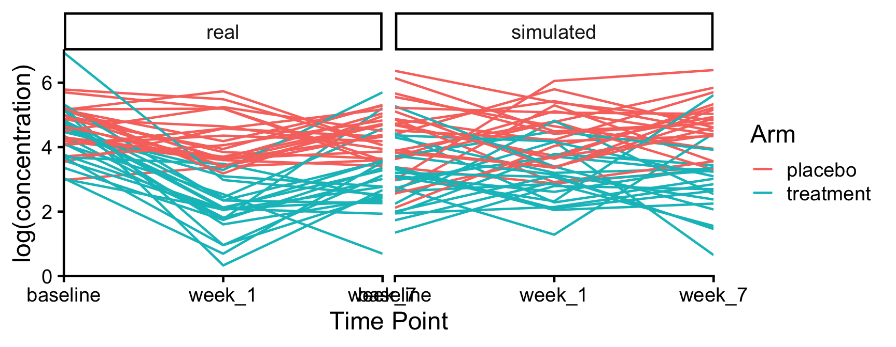
We gave the model no temporal information. We could fix this with the formula: log(conc) ~ arm + time_point.
We want the treatment effect itself to depend on the week, a type of interaction: log(conc) ~ arm + arm : time_point.
Call:
lm(formula = log(conc) ~ arm + arm:time_point, data = cytokines)
Residuals:
Min 1Q Median 3Q Max
-2.36776 -0.57246 0.00535 0.47567 2.64101
Coefficients:
Estimate Std. Error t value Pr(>|t|)
(Intercept) 4.6636 0.1718 27.147 < 2e-16 ***
armtreatment -0.2855 0.2487 -1.148 0.2531
armplacebo:time_pointweek_1 -0.4784 0.2429 -1.969 0.0511 .
armtreatment:time_pointweek_1 -2.3398 0.2543 -9.203 9.50e-16 ***
armplacebo:time_pointweek_7 -0.3121 0.2429 -1.285 0.2013
armtreatment:time_pointweek_7 -1.3173 0.2543 -5.181 8.51e-07 ***
---
Signif. codes: 0 '***' 0.001 '**' 0.01 '*' 0.05 '.' 0.1 ' ' 1
Residual standard error: 0.8239 on 126 degrees of freedom
Multiple R-squared: 0.5653, Adjusted R-squared: 0.5481
F-statistic: 32.77 on 5 and 126 DF, p-value: < 2.2e-16Expected log-concentrations:
The large negative coefficient for armtreatment:time_pointweek_1 captures our earlier observation that the treatment effect is strongest at week 1.
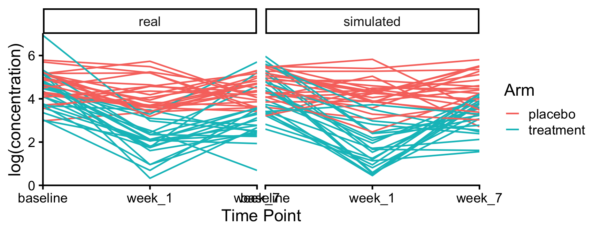
The model treats each sample as independent, but measurements from the same participant are dependent.
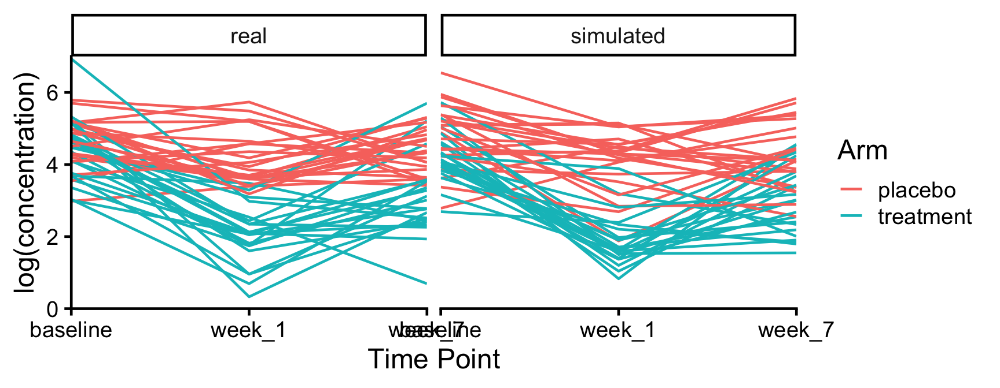
Linear mixed model fit by REML. t-tests use Satterthwaite's method [
lmerModLmerTest]
Formula: log(conc) ~ arm + arm:time_point + (1 | pid)
Data: cytokines
REML criterion at convergence: 327.2
Scaled residuals:
Min 1Q Median 3Q Max
-2.8408 -0.6889 -0.0017 0.5540 3.1092
Random effects:
Groups Name Variance Std.Dev.
pid (Intercept) 0.02198 0.1483
Residual 0.65679 0.8104
Number of obs: 132, groups: pid, 44
Fixed effects:
Estimate Std. Error df t value Pr(>|t|)
(Intercept) 4.6636 0.1718 125.7363 27.147 < 2e-16 ***
armtreatment -0.2855 0.2487 125.7363 -1.148 0.2531
armplacebo:time_pointweek_1 -0.4784 0.2390 83.9999 -2.002 0.0485 *
armtreatment:time_pointweek_1 -2.3398 0.2501 83.9999 -9.355 1.14e-14 ***
armplacebo:time_pointweek_7 -0.3121 0.2390 83.9999 -1.306 0.1952
armtreatment:time_pointweek_7 -1.3173 0.2501 83.9999 -5.267 1.05e-06 ***
---
Signif. codes: 0 '***' 0.001 '**' 0.01 '*' 0.05 '.' 0.1 ' ' 1
Correlation of Fixed Effects:
(Intr) armtrt armp:__1 armt:__1 armp:__7
armtreatmnt -0.691
armplcb:__1 -0.696 0.481
armtrtm:__1 0.000 -0.503 0.000
armplcb:__7 -0.696 0.481 0.500 0.000
armtrtm:__7 0.000 -0.503 0.000 0.500 0.000 Open notebooks/05-modeling.qmd in your Codespace.
The modes flip: whoever was agentic in Exercise 1 is manual now, and vice versa.
Open notebooks/05-modeling.qmd in your Codespace.
The modes flip: whoever was agentic in Exercise 1 is manual now, and vice versa.